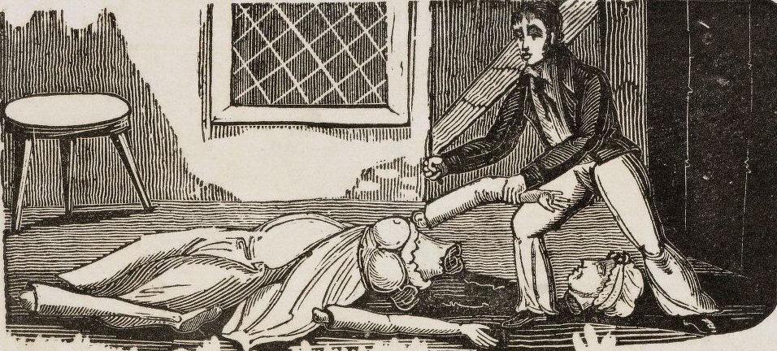

Monday, August the 31th, 2009
back to: title, date or indexes
I had never before visited ephemera assemblyman, but I am glad I did, and you will be too.

I particularly enjoyed Dying Speeches Execution Broadsides, which contains much that is gruesome, in a chronologically distant, non-threatening way. Oddly, no mention is made of the killer Babinsky, whose gore-splattered end would make some of the scenes depicted look more like the twee adventures of Pippy The Pit Pony. I shall transcribe an account of Babinsky's doom here shortly, when I can face typing up the details without emptying my guts all over the place.